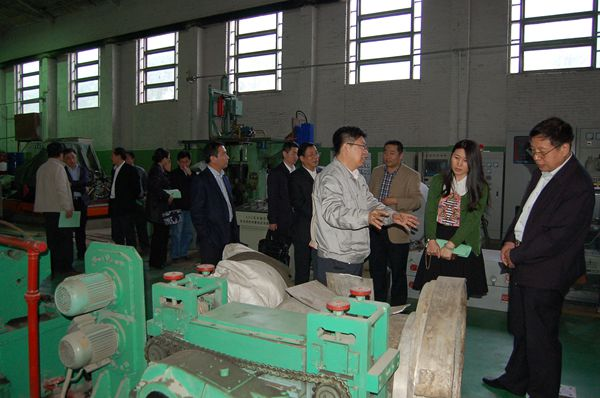

长春工业大学党委书记万春明率团来我校交流考察
时间：2014-5-17 19:04:295月6日，长春工业大学党委书记万春明、副校长熙莹率研究生学院院长赵海平、学科建设办公室主任韩业、机电工程学院院长林洁琼、电气与电子工程学院院长李元春、化学工程学院院长张龙、化学与生命科学学院院长李东风等8人组成的考察团来我校交流考察，受到我校热情接待，双方就共同关心的学科建设、人才引进和人才培养等方面进行了广泛深入的探讨和交流。我校党委书记杨波，校长郭勇义，副书记副校长黄庆学以及学科办、研究生学院、电子学院、机械学院、科技产业处、教务处、机械学院、化工学院负责同志参加了座谈和交流。交流座谈结束后，考察团参观考察了我校材料工程实验中心、工程训练中心、土壤和地下水环境修复实验室。
座谈会上，党委书记杨波代表我校对长春工业大学党委书记万春明一行的到来表示了热烈的欢迎，宾主一起回顾了和重温了具有相似办学历程和学科设置的两所学校在多年来的发展中互相帮助、互相支持、互相勉励的友好历史和所结下的深厚情谊。

校长郭勇义向来宾介绍了学校的基本情况，特别是学科建设和学校向教学研究型大学转型发展的举措。他同时表示，希望万春明书记一行对我校的各项相关工作多提出宝贵的意见。长春工业大学党委书记万春明代表长春工业大学感谢我校的热情接待。他说，长春工业大学此行意在开阔视野、学习其它院校成功的经验，为高水平建设打下基础。
校党委副书记副校长黄庆学全程陪同了考察团的参观活动，在参观过程中，双方对共同关注的科研和教学中的具体问题作了深入广泛的交流。
简介：长春工业大学是吉林省一所以工为主，工、理、管、文、经、法、教育、艺术等多学科相互支撑、协调发展的省属重点大学，是吉林省高层次人才培养、应用技术研发、高新技术产品研制、高水平社会服务的重要基地。1992年被吉林省政府确定为首批三所省属重点高校之一，在2004年全国本科教学工作水平评估中获得优秀等级。2013年7月成为博士学位授权单位。 学校现有全日制在校生18830名，教职员工1887名。学校设有20个学院，2个教研部，有3个一级学科博士点，8个省优势特色重点学科，17个一级学科硕士点，涵盖了68个二级学科硕士点，3个硕士专业学位授权点，13个工程硕士授权领域，54个本科专业。创建了以教育部重点实验室、教育部工程研究中心、国家级实验教学示范中心和吉林省重点实验室、科技创新中心为代表的17个省部级科研机构，9个省实验教学示范中心。